第六段階 検証報告
保存と公開
独立実験 merkatzzz/tsugime-transport-lab / stage6-development。本編とGitHubのmainは未変更。
実験URL：https://tsugime-architecture-transport-lab.merkatzzz.chatgpt.site
第五段階基準：6dc2039eb030e6b0a946d3f83141cf1db8e4921c。開始時にGitHub・ローカル・サイト保存版9のSHAを照合。今回確認できた添付は指示テキストで、別添第五段階ZIPは未確認です。タグstage5-baselineと比較用stage5/へ保全し、保存版1〜4も維持しました。
実装結果
34搬送体・40基本チャンク、三層・二搬送デッキ、周期A/B/Cです。
• U1〜U5：空室、物置、分岐、予備廊下を増設。既存の複雑な通路・H1/H2・C0は維持。
• S1とD1〜D4：徒歩ではつながらない4チャンクの遠隔区域へ、搬送室に乗って往復。
• 固定泉5基：住人が直接接触できない密閉貯留槽。一方向の生物口だけを持ち、着床空欄とは区別。
• BN1〜BN4：壁に固着する非攻撃的な新型中和・供給生物。触手の伸縮、泉全体の中和、供給、解除後の再汚染。
• N4回転：上部デッキの専用空間で90度回り、A/Cの第三層PA東向き接続と、Bの第二層PB南向き接続を切替。
• 個室：退出も柔らかい中央明転へ変更。EV：行先選択をE操作に反映し、現在階・選択階・移動先を表示。
各層の安定時接続個体数はA/Cが第一1・第二1・第三2、Bが第一1・第二2・第三1。伸長・中和完了までは供給を待ちます。
詳細な配置座標、生成処理、主要ファイル、判定方法は実装資料に記載しています。GitHubではdocs/STAGE6.mdです。
搬送・回転の実経路
S1：通常区域(42,12.8,8.4)→上部デッキ(42,6.4,8.4)→(92.4,6.4,8.4)→遠隔着床(92.4,12.8,8.4)。B→Cで逆に帰還。D1〜D4との歩行グラフ接続は全周期で通常区域から分離したままです。
N4：第三層(58.8,12.8,0)→上部デッキ→回転ベイ(75.6,6.4,25.2)で0→90度→第二層(58.8,0,0)。B→Cは逆回転して帰還。全区間の詳細はサービス・回転経路データです。
回転中心は(79.6,6.4,29.2)。半径約5.657m、離隔込み直径約11.714mを確保し、全円掃引を包む保守的AABBで中間角度も連続検査します。端点だけでの判定ではありません。
徒歩の到達集合と往復サービスの安全集合を分離。帰還時にD4の廊下やD2の閉扉小部屋に残った場合、実経路を通ってS1へ退避してから戻ります。通常訪問に孤立例外フラグは使いません。
テスト結果
| 対象 | 成功件数 |
|---|
| 第六段階 | 106 |
| 保存第五段階 | 92 |
| 保存第四段階 | 70 |
| 保存第三段階 | 54 |
| 保存第二段階 | 44 |
| 保存第一段階 | 24 |
| 合計 | 390 |
失敗0。機械可読結果はtest-summary.json、各段階のログは同じフォルダのtests-stage*.txtです。
搬送範囲3種類×方式2種類×遷移3種類の18計画が成立。採用条件は134×50m・予約付き協調搬送です。
| 遷移 | 搬送時間（1倍速） | 連続検査 | 最大同時 |
|---|
| A→B | 28.27秒 | 12,030 | 8体 |
| B→C | 39.07秒 | 19,532 | 8体 |
| C→A | 17.33秒 | 4,211 | 6体 |
警告・触手収納・シャッター開閉を除く一周は84.67秒。全外形・固定設備・泉・他搬送体・回転掃引の離隔0.2m、経路連続性、目標一致を検査しました。
追加試験：遠隔区域の徒歩非接続、同乗往復、実退避、回転途中の相対位置・視線・壁・通路整合、端点では当たらない中間衝突の反例、触手の液面接触、方向・障害物・長さ・実開口・排他の失敗、中和・再汚染・再接続、毒性時の供給拒否、9遷移の反復、三層EVへの歩行乗降を含みます。
さらに、各周期の4供給室すべてについて、固定EV乗場から身体コントローラで歩く12経路を再生しました。結果は供給室への実歩行です。上表のテスト件数とは別の追加監査です。
泉と生物の成功・失敗判定と各周期配置は設備データ。供給室の壁・床・天井と回転途中の本体・内装を実Three.jsメッシュで検査しています。
A/B/C×通常扉開閉の6条件で、生活空間へ露出する同法線重複面0。床と内部壁の裏向き接触面はAで5件、B/Cで4件を分類しています。接触面を露出Z-fightingとして数えていません。床テクスチャ・開口端部の見切り・継手処理は維持。
既存機能の維持
H1/H2各2チャンクの分割・再結合、L字集会室、東翼、C0保管と挿入、三層M1上下搬送、自動運行・実退避・区画別例外、通常扉、NPC2体、会話、簡易個室画像、環境音制御を維持しました。
同じ住戸301→同じ店舗の身体幅付き経路はA=35.13m、B=22.63m、C=34.90m。C0による近道を維持しています。新しい環状経路が追加されるため、全施設の環状数は旧版と同数ではありません。
実画面で未確認の範囲・制約
共有ブラウザは確認できましたが、管理プレビューがrelay could not open browser port 4173: timed out waiting for relay readinessで失敗し、アプリ画面へ到達できませんでした。statusは停止。中継障害の根本原因は未特定です。別サーバー・別ブラウザ経路・ネットワーク権限変更で迂回していません。
実WebGLの描画・視点移動・チラつき・操作感・触手や泉の見え方・明転の自然さ・音量やミュートの聴感は未確認。CPUの形状と操作制御試験を、実画面の目視や聴感として報告しません。
残る制約：研究用の簡易生物・中和速度、今回の固定計画に対応した往復サービス、同階のみの自動退避。EVを用いる階またぎ自動退避は未実装で、経路がなければ安全停止します。A側旧型生物・秘密区域・泉の由来・本編経済・戦闘は対象外のままです。
再開と取得
stage6-developmentから再開してください。npm test、npm run verify、npm run evidence、npm run packageを使用します。最新ソースZIPはサイト上部とこの報告のリンクから取得できます。第五段階の完全復元は保存タグ、比較試遊はstage5/index.htmlを使用。GitHubのmainや本編へ自動マージしないでください。
搬送範囲・方式の比較図
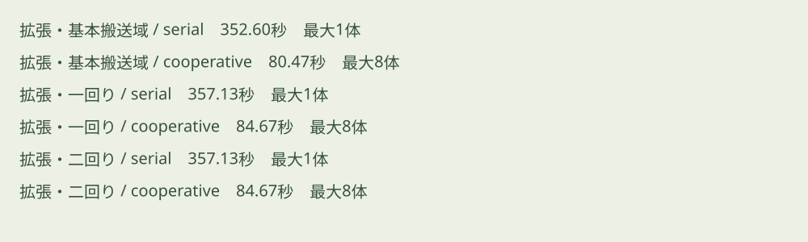
各周期の平面図
周期 A
第3層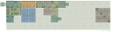
第2層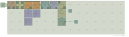
第1層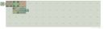
第3層の通路成分グラフ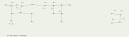
第2層の通路成分グラフ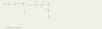
周期 B
第3層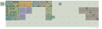
第2層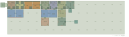
第1層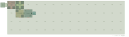
第3層の通路成分グラフ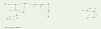
第2層の通路成分グラフ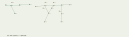
周期 C
第3層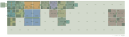
第2層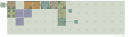
第1層 第3層の通路成分グラフ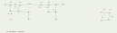
第2層の通路成分グラフ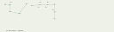
遠隔区域と泉の配置
周期 A
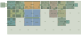
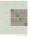
周期 B
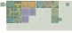
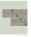
周期 C
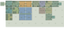
各遷移の搬送経路・保管と一時退避
A→B
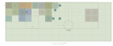
B→C
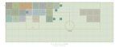
C→A
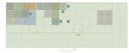